SEA Milestones 2 and 3 — step-by-step figures
00 pipeline steps
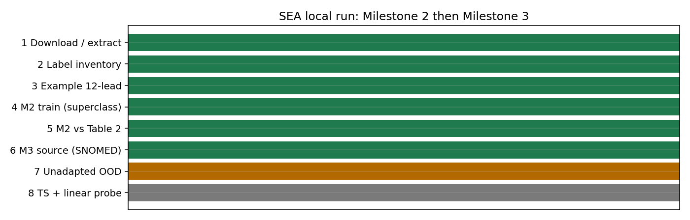
01 ptbxl superclass prevalence
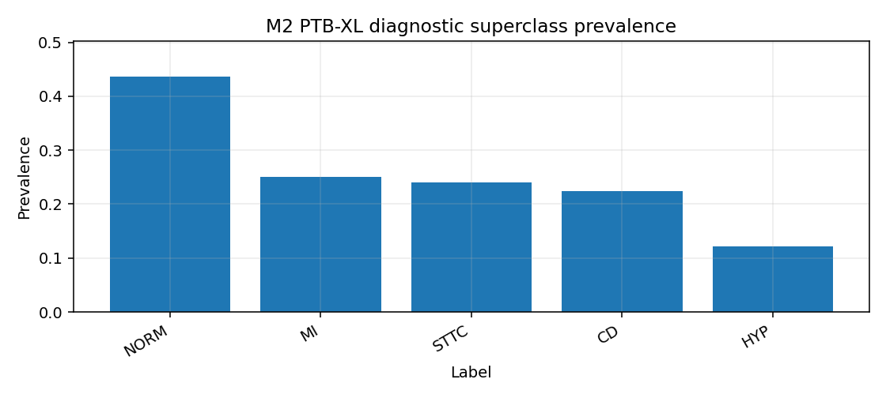
02 example 12lead
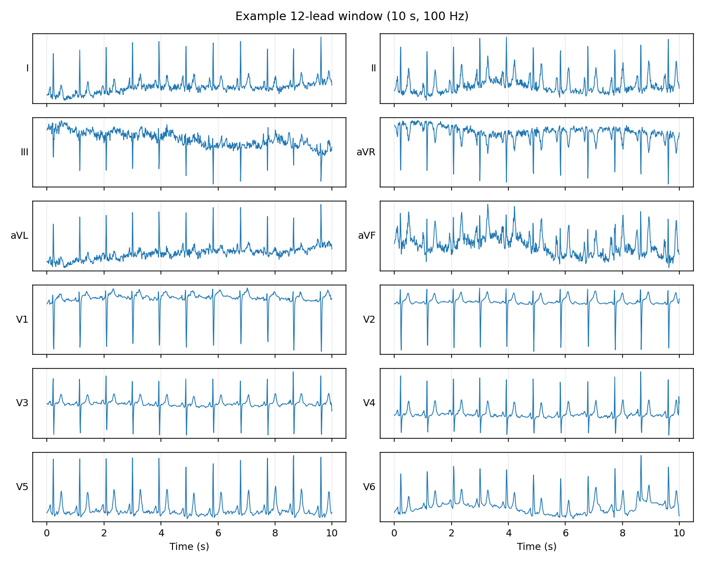
03 m2 vs table2
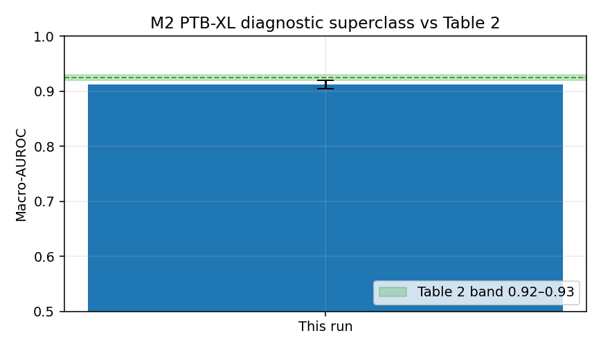
04 m2 per class auroc
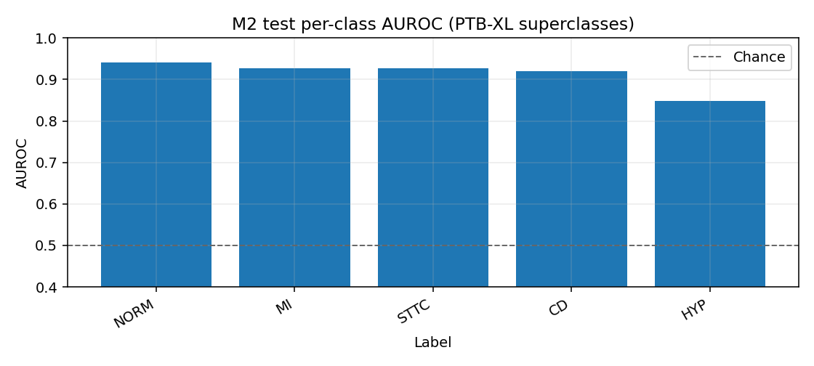
05 id vs ood chapman
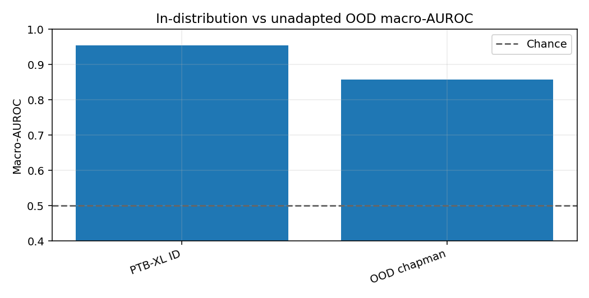
06 ood chapman per class
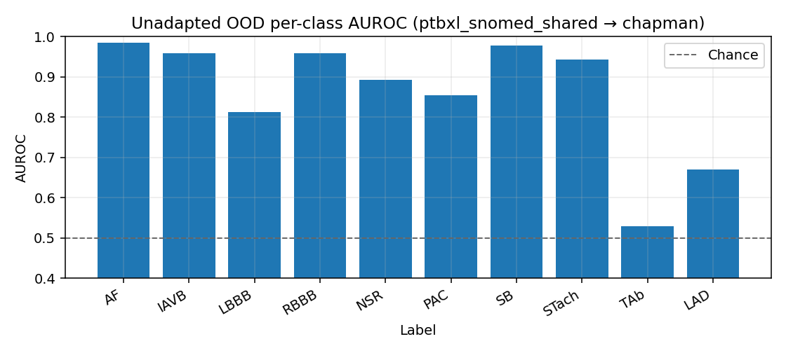
ptbxl snomed shared per class auroc
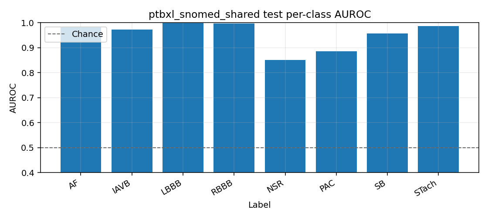
ptbxl snomed shared prevalence
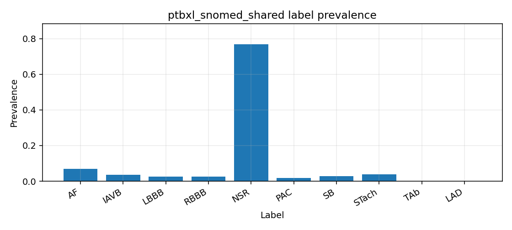
ptbxl snomed shared train
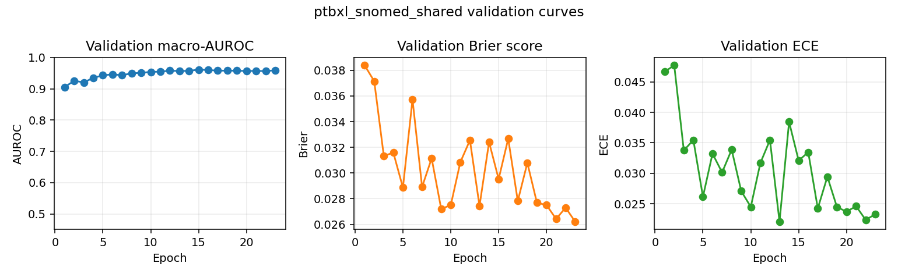
ptbxl superclass train
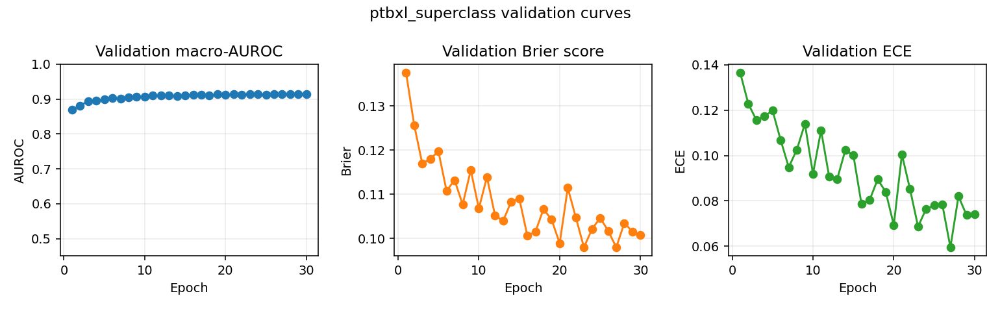